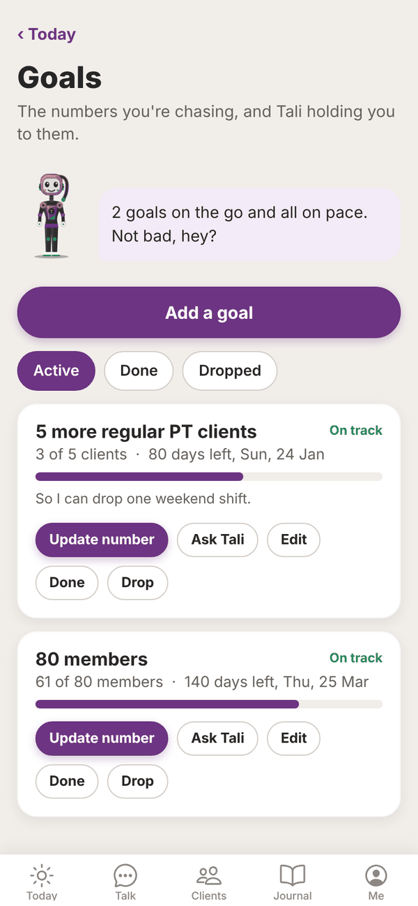
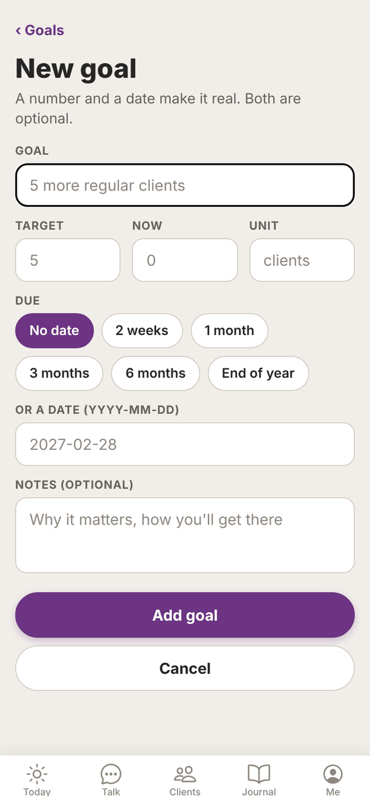
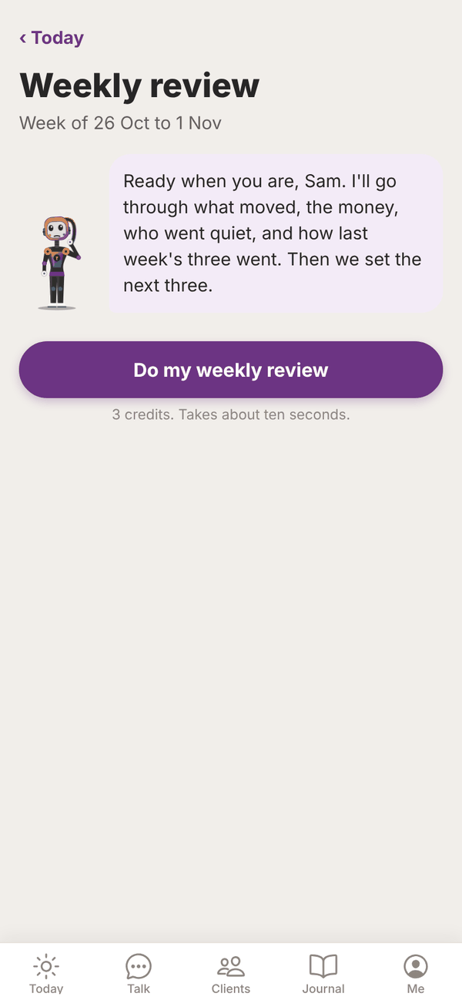
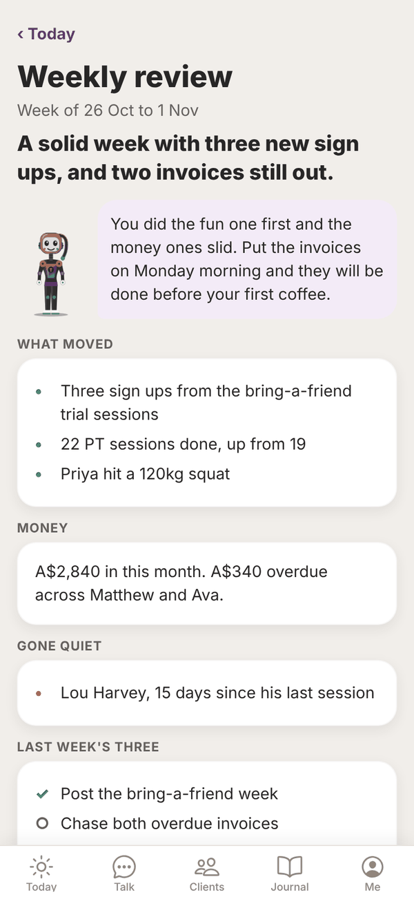
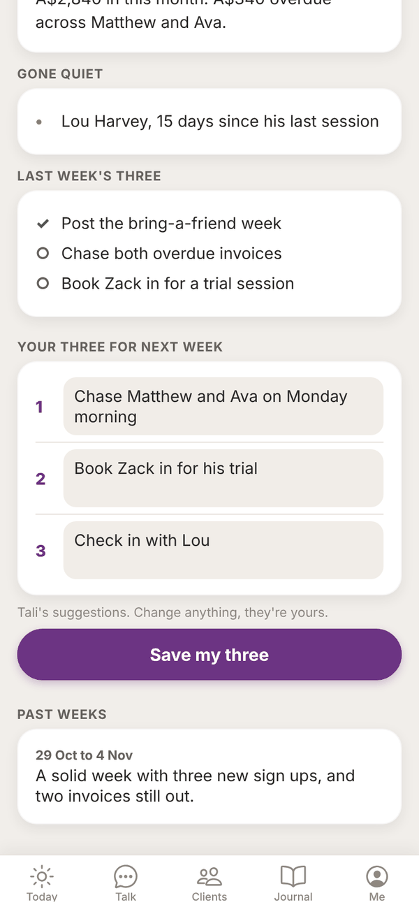

Tali HQ guide
Goals and weekly review
Set the numbers you're chasing, let Tali hold you to them, and do a ten minute weekly review with three promises for the week.
Goals are the numbers you're chasing, with Tali holding you to them. The weekly review is ten minutes a week with Tali on what moved, what slipped and what's next, ending with three promises for the coming week. Both are part of Tali HQ. Tali HQ
Goals#
Open Me, Goals, or tap the Goals tile on Today.


Add a goal#
- Tap Add a goal.
- In Goal, name it, for example "5 more regular clients".
- Add a Target number, where you are Now, and a Unit like "clients". All optional, but a number makes it real.
- Under Due, pick No date, 2 weeks, 1 month, 3 months, 6 months or End of year. Or type a date in Or a date (YYYY-MM-DD).
- Add Notes (optional): why it matters and how you'll get there.
- Tap Add goal.
Or tell Tali in Talk: "my goal is 80 members by March, I'm at 61". She saves it and tells you where you stand.
Keep it up to date#
Each goal shows a progress bar, how many days are left, and On track or Behind pace (orange).
- Update number: type where you are now and tap Save. Or tell Tali: "we're at 64 members".
- Ask Tali: opens Talk with a question about this goal ready to send.
- Edit: change the goal.
- Done or Drop: move it to the Done or Dropped tab. From there, Make it active again brings it back.
Tali keeps your goals in front of you: the Goals tile on Today, a mention in your brief when you're behind pace, and a check in your weekly review. Goals use no credits.
Weekly review#
Open Me, Weekly review, or tap the This week tile on Today when it says the review is due.


- Tap Do my weekly review. It takes about ten seconds and uses 3 credits.
- Tali pulls the week together: - a headline and Tali's take on the week - What moved: what got done - Money: paid, sent and overdue - Gone quiet: clients who've gone quiet - Last week's three: which of your promises you kept (ticked) and which slipped
- Under Your three for next week, Tali suggests three. Change anything, they're yours.
- Tap Save my three. They're then locked in for the week.

Your three show on Today all week in the This week tile, with tick boxes. Tali checks in on them in your brief and uses them to fill in tomorrow's three at your shutdown.
Past weeks at the bottom lists earlier reviews. Tap one to read it.
Pick your review day and time#
- Open Me, Settings.
- Under Weekly review day, pick a day (Sunday is the default).
- Under Weekly review time, pick 8:00am, 10:00am, 12:00pm, 3:00pm, 5:00pm or 7:00pm.
- Tap Save.
Tali sends you a nudge at that time, and the review looks back at the week that ended the day before.
On the Free plan#
On Free, Goals and Weekly review explain what they do, with See plans. Your Friday check-in from Tali still asks how your goals are going. Free
Questions#
Do goals cost credits?
No. Adding, updating and tracking goals is free on Tali HQ and Pro. Only the weekly review uses credits, 3 each time.
What does "Behind pace" mean?
Based on your due date and target, you're further behind than you'd expect at this point.
Do I have to put numbers on a goal?
No, but Tali can only show progress and pace with a target and a current number.
Can I change my three after saving them?
No. Once saved they're locked in for the week ("Locked in for the week of ..."). Tick them off on Today as you go.
I missed my review day. Can I still do it?
Yes. Open Weekly review any time and tap Do my weekly review.